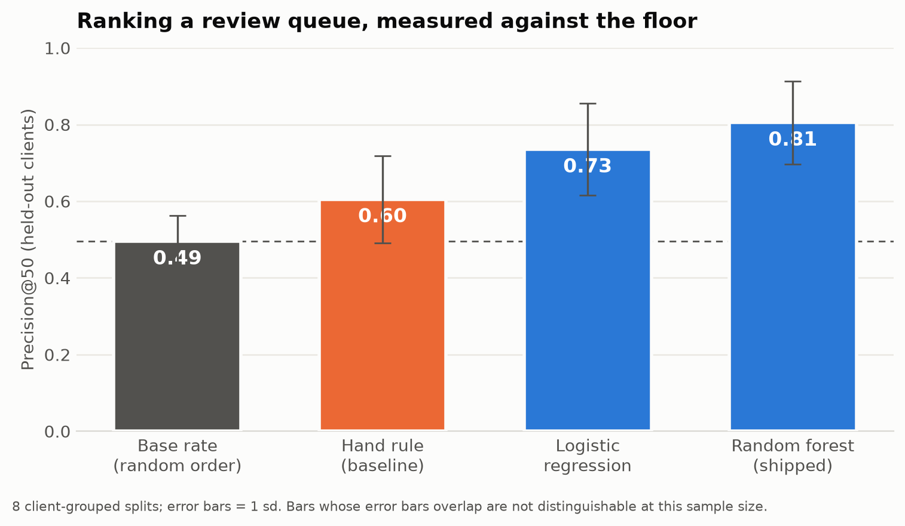
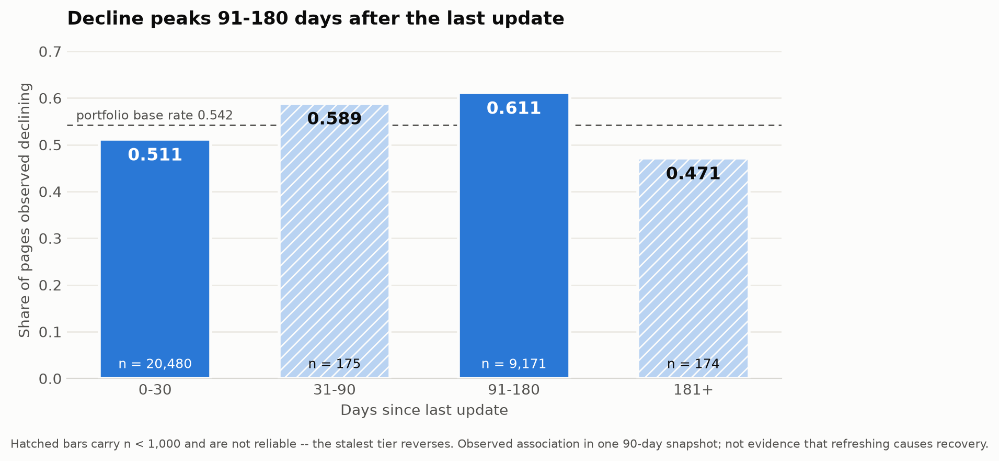

FlyRank ML Internship · Capstone · Search Intelligence
FlyRank publishes content straight into client websites and then watches it decay — rankings slip, clicks fall, and most teams notice a quarter too late. The pages that need attention are already surfaced by hand-written rules: thresholds and if-this-then-that flags that work and run in production. But review backlogs are far larger than any team can clear, so the practical question is not which pages are declining but which pages to open first — and that is a ranking problem, exactly where a fixed rule runs out. Using an anonymised 90-day snapshot of 30,000 pages across 32 pseudonymised clients from the FlyRank ML Internship dataset, I built a ranked review queue and compared it against a transparent hand-written rule on identical client-grouped splits. A random forest reached a precision@50 of roughly 0.80 (±0.11) against a hand-rule baseline of 0.61 and a base rate of 0.49, beating the rule in 7 of 8 splits; a gradient-boosted model won only 5 of 8 against the forest, so the added complexity was not adopted. In practical terms the queue surfaces about 12 more genuinely declining pages per editor-week than working the backlog in arbitrary order. The output is decision support — a reading order with a stated reason on every row — and it does not establish that acting on any page recovers its traffic.
FlyRank runs the full content cycle for its clients — research, write, publish into the site, then watch the search data and optimise. The hard part is the last step. A page that ranked well in March quietly loses position through April and May, and the drop is only obvious once the traffic is already gone. The product handles this today with hand-written flags: a health score, quick-win tags, needs-attention markers, all built from thresholds someone chose. They work. What they cannot do is put a thousand flagged pages in a sensible order.
That is the gap this paper works in. The rule answers is this page in trouble?; the editor
needs an answer to which of these do I open on Monday morning? So the hand-written rule is
not the enemy here — it is the baseline, reimplemented transparently in
w04_baseline_score.ipynb and given the same splits and the same metric as every model
that tries to beat it.
An editor responsible for several client sites opens their week with a list far longer than the week. In this dataset 9,961 pages are simultaneously losing impressions and still earning meaningful search visibility. At a realistic review capacity of 50 pages a week, that is roughly 199 weeks of backlog. Nobody clears that list. The only lever anyone actually has is the order.
That reframing decides everything downstream. The work is judged at the top of the list, not on overall accuracy, so the metric is precision@50 — one editor-week of queue — and never accuracy without its base rate beside it.
The two ways of being wrong are not equally expensive. A false positive costs an editor one to three hours on a healthy page, and it is visible: they open it, see nothing wrong, move on. A false negative leaves a declining page with real traffic sliding for another quarter, and it is invisible — nobody ever learns what the queue failed to show them. That asymmetry is why this system stops at recommending an order and leaves every action to a person.
Release. content_refresh_anonymized.csv from the FlyRank ML Internship
dataset — 30,000 rows, one row per content item, 44 columns, across 32 pseudonymised clients.
Metrics cover a trailing 90-day window in a single snapshot. Identifiers are hashes; the release
contains no client names, domains, URLs, page titles, or raw search queries.
Warehouse support. Lane 2's documented default is “starter playground plus
warehouse support”. The window design and data contract were developed against the gated
warehouse release (fact_content_daily_performance), using March 2026 features against an
April 2026 outcome with a decision moment of 31 March. That exercise measured something the modelling
set cannot show: of 9,841,378 March page-days, only 36.7% carried Search Console data
and 4.2% carried analytics data under an IS TRUE availability filter.
| Excluded | Reason |
|---|---|
trend_direction | The label is this column, bucketed. |
trend_pct | The label's own source — the answer in disguise. |
impressions_last_30d, impressions_prev_30d |
trend_pct is defined as their ratio, so the pair reconstructs the label outright. |
| All analytics columns (warehouse) | Present on 4.2% of rows and zero-filled elsewhere, so a zero means “not measured”, not “no engagement”. |
| Hashed identifiers | Used for grouping and splitting only, never as features. |
| Pages under 500 impressions / 90 days | Below the visibility floor — no edit pays off on traffic nobody sees. These are excluded from the queue, not ranked low. |
The third row is the one worth dwelling on. Neither 30-day column is “the label” by name, so a blocklist built on column names would have let both through. Catching it required knowing how the label was constructed.
Label. is_declining_label = (trend_direction == "down") — an observed
impressions-trend bucket computed from the 30-day change. It is not page quality, and it is not the
future. It is a recorded direction of travel, and every claim here inherits that limit.
Features. 18 numeric and 8 categorical columns, all knowable before the outcome: search volume and competition, page depth, log-scaled traffic totals, days visible in search, content age, days since last update, click-through rate, average position, and engagement rates, plus categorical tiers for competition, content type, intent, age, freshness, length, impressions and position.
Baseline. A transparent hand-written rule, frozen before modelling and never retuned:
score = weight × log10(impressions) × (1 + CTR shortfall), where the weight comes
from one reason code per page. Its position-band medians are fitted on training clients only, so the
baseline is never flattered by test data.
Splits are grouped by client, holding out 25% of clients, repeated across 8 different splits. Pages within a client share templates, publishing cadence and niche, so a random row split lets a model score well by recognising the client rather than by learning what a declining page looks like.
The cost of getting this wrong, measured. The identical model scored precision@50 of 0.96 under a random row split and 0.81 under a client-grouped split. That 0.157 gap is memorisation. The random split also reported a tighter spread (sd 0.03 against 0.11) — it looks better and steadier at the same time, which is exactly what makes it easy to believe.
A checklist that never fires proves nothing, so the suspects were added back deliberately to confirm the
test harness detects them. Introducing trend_pct moved ROC-AUC from
0.73 to 1.00; introducing the two 30-day impression columns moved it to
0.94. Both were then removed and the honest figures kept. The harness detects a leak
when one exists, so the reported numbers are clean because the features are clean — not because
the test is blind.
Every method below saw the same data, the same 8 client-grouped splits, and the same metric.
| Method | Precision@50 | sd | ROC-AUC |
|---|---|---|---|
| Base rate (random order) | 0.495 | 0.068 | 0.500 |
| Hand-written rule (baseline) | 0.605 | 0.114 | 0.583 |
| Logistic regression | 0.735 | 0.120 | 0.673 |
| Decision tree (depth 3) | 0.622 | 0.126 | 0.657 |
| Random forest (shipped) | 0.805 | 0.108 | 0.710 |
| Gradient boosting | 0.782 | 0.146 | 0.712 |

Because every method saw identical splits, the stronger test is paired: how often did each actually win?
The last line decided what shipped. The heaviest model did not beat the lighter one reliably, so it was not adopted — complexity has to earn its place, and here it did not.
The counter-example, reported rather than buried. On split 3 the hand-written rule scored 0.80 and the forest 0.60. One split in eight, the simple rule won outright. That is what a “7 of 8” win rate looks like from the inside, and it is why win counts appear here beside the averages.
Written before a reader can write it for me.
Language throughout is deliberate: observed for patterns in this dataset, directional for comparisons that survived repetition, decision support for the queue. Nothing here proves anything about how any search engine ranks content.
The model ranks. A readable rule names the action. A person decides.
A probability cannot tell anyone what to type, and a rule cannot rank 16,726 pages well. So the two jobs are split: the out-of-fold model score sets the order, and a transparent archetype sets the action. Every row carries a reason an editor can disagree with.
| Archetype | Action | Pages | Observed decline rate |
|---|---|---|---|
| Ranks 1–20, CTR below its position band | Fix CTR | 3,673 | 0.701 |
| Not updated in 91–180 days, still visible | Refresh | 5,081 | 0.579 |
| Just outside page 1, competitive CTR | Support | 2,040 | 0.584 |
| Ranks past position 20 | Monitor | 2,485 | 0.571 |
| Visible, no flag fired | Monitor | 3,447 | 0.531 |
Two of those archetypes encode a measured negative. Pages past position 20 are deliberately not given a CTR action, because the CTR-versus-position relationship reversed there when it was tested (below-band pages declined less, by 0.06). And “no flag fired” is an honest category rather than a forced label.

At 50 reviews a week the queue surfaces about 42 genuinely declining pages, against about 30 from working the backlog in arbitrary order: a net gain of roughly 12 better-targeted reviews per editor-week. That is a meaningful scheduling improvement, not a transformation, and describing it that way is deliberate.
The honest gain does not justify removing the human from any of these:
Every number on this page is produced by notebooks in the repository this page is served from. Seeds are fixed (seed 42; splits 0–7), and library versions are recorded alongside the results in capstone_metrics.json.
work/notebooks/capstone.ipynb — mirrors this paper end to end and regenerates both figureswork/notebooks/w03_data_contract.ipynb — the warehouse data contract and window designwork/notebooks/w04_baseline_score.ipynb — the hand-written baseline and its signal checkswork/notebooks/w05_model.ipynb — model comparison against the baselinework/notebooks/w06_validation_audit.ipynb — split audit and leakage positive controlswork/notebooks/w07_action_playbook.ipynb — the queue, review rules and monitoring triggers
To rerun: install requirements.txt and run the notebooks top to bottom. Tree-ensemble
results shift a few points between scikit-learn versions; a rerun should reproduce the ordering and the
win counts rather than the third decimal.
Built on the FlyRank ML Internship dataset — flyrank.ai. The anonymised release and the gated warehouse release used here are provided by FlyRank for the ML internship track. All identifiers are pseudonymised; no client names, domains, URLs, page titles, or raw search queries appear in the data or in this write-up.
Thanks to the track leads for a curriculum that put the baseline, the validation design and the limitations section before the model — which is the order that made this work worth publishing.